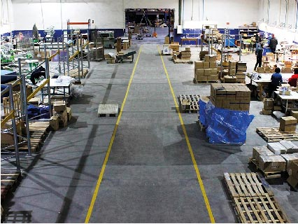

Empresas com atividade documentada nesta área
Exemplos para compreender funções e modelos de trabalho. As atividades são atribuídas às fontes oficiais consultadas; não constituem uma recomendação comercial.

Stricker
Coimbra, Portugal · sede
Desenvolvimento de produto e distribuição
Declara criação e desenvolvimento de brindes, stock e distribuição a profissionais do setor. A fonte não identifica o fabricante de cada artigo.
Ler o perfil de Stricker →Fontes: Stricker — Who we are

TejoBrinde
Prior Velho, Portugal · sede
Fornecimento de brindes e exportação
Descreve fornecimento nacional e exportação, com stock em Lisboa e serviço de gravações. O perfil distingue estes serviços atuais da informação histórica sobre importação.
Ler o perfil de TejoBrinde →Fontes: TejoBrinde — Missão · TejoBrinde — Serviços
Solo midocean
Países Baixos · sede
Fornecimento, impressão e logística
Identifica instalações próprias de logística e impressão na Polónia. Documenta também dobragem, etiquetas e embalagem, com opções que variam por pedido e região.
Ler o perfil de Solo midocean →Fontes: Solo midocean — Locations · Solo midocean — Special handling
Funções diferentes na mesma cadeia
Um distribuidor fornece produtos a outros profissionais ou empresas. Um importador introduz produtos adquiridos noutro mercado; essa função não implica fabrico próprio. Um revendedor acompanha o pedido do cliente final e pode articular produto, personalização e entrega. A mesma organização pode acumular funções, mas o nome comercial não confirma quais executa.

Stock e fornecimento a profissionais
Stock é a quantidade armazenada para fornecimento. A existência de stock não assegura reserva para um pedido, nem disponibilidade de todas as variantes. A distribuição e a exportação documentadas nos exemplos não bastam para atribuir importação a todas as empresas do setor.
Portugal, Ibéria e Europa
Uma empresa portuguesa pode fornecer outros países e recorrer a produção internacional. Uma operação ibérica pode combinar apoio comercial em português ou espanhol com armazéns noutro local. Uma rede europeia pode centralizar preparação e expedição. Para compreender o percurso concreto, identifique a entidade fornecedora, o local de stock, onde ocorre a personalização e de onde parte a encomenda. A localização, por si só, não demonstra qualidade ou superioridade.
Fontes e âmbito
Fontes oficiais consultadas para as atividades atribuídas às empresas. As explicações das funções e do percurso são sínteses editoriais; não descrevem um modelo universal nem avaliam o desempenho dos fornecedores.
- Stricker — Who we are — consulta: .
- TejoBrinde — Missão — consulta: .
- Solo midocean — Locations — consulta: .
- TejoBrinde — Serviços — consulta: .
- Solo midocean — Special handling — consulta: .